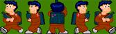
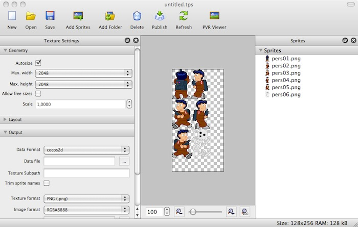

Sprites y colisiones¶
En esta sesión vamos a ver un componente básico de los videojuegos: los sprites. Vamos a ver cómo tratar estos componentes de forma apropiada, cómo animarlos, moverlos por la pantalla y detectar colisiones entre ellos.
Sprites¶
Los sprites hemos dicho que son todos aquellos objetos de
la escena que se mueven y/o podemos interactuar con ellos de alguna forma.
Podemos crear un sprite en Cocos2D con la clase Sprite
a partir de la textura de dicho sprite:
1 | Sprite *sprite = Sprite::create("personaje.png"); |
El sprite podrá ser añadido a la escena como cualquier otro nodo, añadiéndolo
como hijo de alguna de las capas con addChild:.
Posición¶
Al igual que cualquier nodo, un sprite tiene una posición en pantalla
representada por su propiedad position, de tipo Vec2 (también podemos utilizar como tipo Point, ya que es un alias de Vec2).
Por ejemplo, para posicionar un sprite en unas determinadas coordenadas
le asignaremos un valor a su propiedad position (esto es aplicable a
cualquier nodo):
1 | sprite->setPosition(Vec2(240, 160)); |
La posición indicada corresponde al punto central del sprite, aunque
podríamos modificar esto con la propiedad anchorPoint, de forma similar
a las capas de CoreAnimation. El sistema de coordenadas de Cocos2D es el mismo que el
de CoreGraphics, el origen de coordenadas se encuentra en la esquina inferior
izquierda, y las y son positivas hacia arriba.
Podemos aplicar otras transformaciones al sprite, como rotaciones
(rotation), escalados (scale, scaleX, scaleY), o desencajados
(skewX, skewY). También podemos especificar su orden Z (zOrder).
Recordamos que todas estas propiedades no son exclusivas de los sprites, sino que son
aplicables a cualquier nodo, aunque tienen un especial interés en el caso de los sprites.
Fotogramas¶
Estos objetos pueden estar animados. Para ello deberemos definir los distintos fotogramas (o frames) de la animación. Podemos definir varias animaciones para cada sprite, según las acciones que pueda hacer. Por ejemplo, si tenemos un personaje podemos tener una animación para andar hacia la derecha y otra para andar hacia la izquierda. El sprite tendrá un determinado tamaño (ancho y alto), y cada fotograma será una imagen de este tamaño.
Cambiando el fotograma que se muestra del sprite en cada momento podremos animarlo. Para ello deberemos tener imágenes para los distintos fotogramas del sprite. Sin embargo, como hemos comentado anteriormente, la memoria de vídeo es un recurso crítico, y debemos aprovechar al máximo el espacio de las texturas que se almacenan en ella. Recordemos que el tamaño de las texturas en memoria debe ser potencia de 2. Además, conviene evitar empaquetar con la aplicación un gran número de imágenes, ya que esto hará que el espacio que ocupan sea mayor, y que la carga de las mismas resulte más costosa.
Para almacenar los fotogramas de los sprites de forma óptima, utilizamos lo que se conoce como sprite sheets. Se trata de imágenes en las que incluyen de forma conjunta todos los fotogramas de los sprites, dispuestos en forma de mosaico.

Podemos crear estos sprite sheets de forma manual, aunque encontramos herramientas que nos facilitarán enórmemente este trabajo, como TexturePacker (http://www.texturepacker.com). Esta herramienta cuenta con una versión básica gratuita, y opciones adicionales de pago. Además de organizar los sprites de forma óptima en el espacio de una textura OpenGL, nos permite almacenar esta textura en diferentes formatos (RGBA8888, RGBA4444, RGB565, RGBA5551, PVRTC) y aplicar efectos de mejora como dithering. Esta herramienta permite generar los sprite sheets en varios formatos reconocidos por los diferentes motores de videojuegos, como por ejemplo Cocos2D o libgdx.

Con esta herramienta simplemente tendremos que arrastrar sobre ella el conjunto de imágenes con los distintos
fotogramas de nuestros sprites, y nos generará una textura optimizada para OpenGL con todos ellos
dispuestos en forma de mosaico. Cuando almacenemos esta textura generada, normalmente se guardará un fichero
.png con la textura, y un fichero de datos que contendrá información sobre los distintos fotogramas
que contiene la textura, y la región que ocupa cada uno de ellos.
Para poder utilizar los fotogramas añadidos a la textura deberemos contar con algún mecanismo que nos permita mostrar en pantalla de forma independiente cada región de la textura anterior (cada fotograma). En prácticamente todos los motores para videojuegos encontraremos mecanismos para hacer esto.
En el caso de Cocos2D, tenemos la clase SpriteFrameCache que se encarga de almacenar la
caché de fotogramas de sprites que queramos utilizar. Con TexturePacker habremos
obtenido un fichero .plist (es el formato utilizado por Cocos2D) y una imagen .png.
Podremos añadir fotogramas a la caché a partir de estos dos ficheros. En el fichero .plist se
incluye la información de cada fotograma (tamaño, región que ocupa en la textura, etc). Cada fotograma se
encuentra indexado por defecto mediante el nombre de la imagen original que añadimos a TexturePacker, aunque
podríamos editar esta información de forma manual en el .plist.
La caché de fotogramas se define como singleton. Podemos añadir nuevos fotogramas a este singleton de la siguiente forma:
1 2 | SpriteFrameCache::getInstance() ->addSpriteFramesWithFile("sheet.plist"); |
En el caso anterior, utilizará como textura un fichero con el mismo nombre que el .plist pero
con extensión .png. También encontramos una versión del método anterior que también recibe como
parámetro la textura a utilizar, y de esta forma nos permite utilizar un fichero de textura
con distinto nombre al .plist.
Una vez introducidos los fotogramas empaquetados por TexturePacker en la caché de Cocos2D, podemos crear sprites a partir de dicha caché con:
1 | Sprite *sprite = Sprite::createWithSpriteFrameName("frame01.png"); |
En el caso anterior creamos un nuevo sprite, pero en lugar de hacerlo directamente a partir de una
imagen, debemos hacerlo a partir del nombre de un fotograma añadido a la caché de textura. No debemos confundirnos
con esto, ya que en este caso al especificar "frame01.png" no buscará un fichero con este nombre
en la aplicación, sino que buscará un fotograma con ese nombre en la caché de textura. El que los fotogramas
se llamen por defecto como la imagen original que añadimos a TexturePacker puede llevarnos a confusión.
También podemos obtener el fotograma como un objeto SpriteFrame. Esta clase no define un
sprite, sino el fotograma almacenado en caché. Es decir, no es un nodo que podamos almacenar en la
escena, simplemente define la región de textura correspondiente al fotograma:
1 2 | SpriteFrame* frame = SpriteFrameCache::getInstance() ->spriteFrameByName("frame01.png"); |
Podremos inicializar también el sprite a partir del fotograma anterior, en lugar de hacerlo directamente a partir del nombre del fotograma:
1 | Sprite *sprite = Sprite::createWithSpriteFrame(frame); |
Animación¶
Podremos definir determinadas secuencias de frames para crear animaciones. Las animaciones se
representan mediante la clase Animation, y se pueden crear a partir de la secuencia de
fotogramas que las definen. Los fotogramas deberán indicarse mediante objetos de la clase
SpriteFrame:
1 2 3 4 5 | Animation *animAndar = Animation::create(); animAndar->addSpriteFrame(SpriteFrameCache::getInstance() ->spriteFrameByName("frame01.png")); animAndar->addSpriteFrame(SpriteFrameCache::getInstance() ->spriteFrameByName("frame02.png")); |
Podemos ver que los fotogramas se pueden obtener de la caché de fotogramas definida anteriormente. Además
de proporcionar una lista de fotogramas a la animación, deberemos proporcionar su periodicidad, es decir, el
tiempo en segundos que tarda en cambiar al siguiente fotograma. Esto se hará mediante la propiedad
delayPerUnit:
1 | animAndar->setDelayPerUnit(0.25); |
Una vez definida la animación, podemos añadirla a una caché de animaciones que, al igual que la caché de texturas, también se define como singleton:
1 2 | AnimationCache::getInstance() ->addAnimation(animAndar, "animAndar"); |
La animación se identifica mediante la cadena que proporcionamos como parámetro
name. Podemos cambiar el fotograma que muestra actualmente un sprite con su método:
1 | sprite->setDisplayFrameWithAnimationName("animAndar", 0); |
Con esto buscará en la caché de animaciones la animación especificada, y mostrará de ella el fotograma cuyo índice proporcionemos. Más adelante cuando estudiemos el motor del juego veremos cómo reproducir animaciones de forma automática.
Sprite batch¶
En OpenGL los sprites se dibujan realmente en un contexto 3D. Es decir, son texturas que se mapean sobre polígonos 3D (concretamente con una geometría rectángular). Muchas veces encontramos en pantalla varios sprites que utilizan la misma textura (o distintas regiones de la misma textura, como hemos visto en el caso de los sprite sheets). Podemos optimizar el dibujado de estos sprites generando la geometría de todos ellos de forma conjunta en una única operación con la GPU. Esto será posible sólo cuando el conjunto de sprites a dibujar estén contenidos en una misma textura.
Podemos crear un batch de sprites con Cocos2D utilizando la clase
1 2 3 | SpriteBatchNode *spriteBatch = SpriteBatchNode::create("sheet.png"); this->addChild(spriteBatch); |
El sprite batch es un tipo de nodo más que podemos añadir a nuestra capa como hemos visto,
pero por si sólo no genera ningún contenido. Deberemos añadir como hijos los sprites que queremos
que dibuje. Es imprescindible que los hijos sean de tipo Sprite (o subclases de ésta), y
que tengan como textura la misma textura que hemos utilizado al crear el batch (o regiones de
la misma). No podremos añadir sprites con ninguna otra textura dentro de este batch.
1 2 3 4 5 6 7 | Sprite *sprite1 = Sprite::createWithSpriteFrameName("frame01.png"); sprite1->setPosition(Vec2(50,20)); Sprite *sprite2 = Sprite::createWithSpriteFrameName("frame01.png"); sprite2->setPosition(Vec2(150,20)); spriteBatch->addChild(sprite1); spriteBatch->addChild(sprite2); |
En el ejemplo anterior consideramos que el frame con nombre "frame01.png"
es un fotograma que se cargó en la caché de fotogramas a partir de la textura sheet.png.
De no pertenecer a dicha textura no podría cargarse dentro del batch.
Colisiones¶
Otro aspecto de los sprites es la interacción entre ellos. Nos interesará saber cuándo somos tocados por un enemigo o una bala para disminuir la vida, o cuándo alcanzamos nosotros a nuestro enemigo. Para ello deberemos detectar las colisiones entre sprites. La colisión con sprites de formas complejas puede resultar costosa de calcular. Por ello se suele realizar el cálculo de colisiones con una forma aproximada de los sprites con la que esta operación resulte más sencilla. Para ello solemos utilizar el bounding box, es decir, un rectángulo que englobe el sprite. La intersección de rectángulos es una operación muy sencilla.
La clase Sprite contiene un método getBoundingBox que
nos devuelve un objeto Rect que representa la caja en la que el
sprite está contenido. Con la función intersectsRect podemos
comprobar de forma sencilla y eficiente si dos rectángulos colisionan:
1 2 3 4 5 6 7 | Rect bbPersonaje = spritePersonaje->getBoundingBox(); Rect bbEnemigo = spriteEnemigo->getBoundingBox(); if (bbPersonaje.intersectsRect(bbEnemigo)) { // Game over ... } |
Motor del juego¶
El componente básico del motor de un videojuego es lo que se conoce como ciclo del juego (game loop). Vamos a ver a continuación en qué consiste este ciclo.
Ciclo del juego¶
Se trata de un bucle infinito en el que tendremos el código que implementa el funcionamiento del juego. Dentro de este bucle se efectúan las siguientes tareas básicas:
-
Leer la entrada: Lee la entrada del usuario para conocer si el usuario ha pulsado alguna tecla desde la última iteración.
-
Actualizar escena: Actualiza las posiciones de los sprites y su fotograma actual, en caso de que estén siendo animados, la posición del fondo si se haya producido scroll, y cualquier otro elemento del juego que deba cambiar. Para hacer esta actualización se pueden tomar diferentes criterios. Podemos mover el personaje según la entrada del usuario, la de los enemigos según su inteligencia artificial, o según las interacciones producidas entre ellos y cualquier otro objeto (por ejemplo al ser alcanzados por un disparo, colisionando el sprite del disparo con el del enemigo), etc.
-
Redibujar: Tras actualizar todos los elementos del juego, deberemos redibujar la pantalla para mostrar la escena tal como ha quedado en el instante actual.
-
Dormir: Normalmente tras cada iteración dormiremos un determinado número de milisegundos para controlar la velocidad a la que se desarrolla el juego. De esta forma podemos establecer a cuantos fotogramas por segundo (fps) queremos que funcione el juego, siempre que la CPU sea capaz de funcionar a esta velocidad.
1 2 3 4 5 | while(true) { leeEntrada(); actualizaEscena(); dibujaGraficos(); } |
Este ciclo no siempre deberá comportarse siempre de la misma forma. El juego podrá pasar por distintos estados, y en cada uno de ellos deberán el comportamiento y los gráficos a mostrar serán distintos (por ejemplo, las pantallas de menú, selección de nivel, juego, game over, etc). Podemos modelar esto como una máquina de estados, en la que en cada momento, según el estado actual, se realicen unas funciones u otras, y cuando suceda un determinado evento, se pasará a otro estado.
Actualización de la escena¶
En Cocos2D no deberemos preocuparnos de implementar el ciclo del juego, ya que de esto
se encarga el singleton Director. Los estados del juego se
controlan mediante las escenas (Scene). En un momento dado, el ciclo de
juego sólo actualizará y mostrará los gráficos de la escena actual. Dicha escena dibujará
los gráficos a partir de los nodos que hayamos añadido a ella como hijos.
Ahora nos queda ver cómo actualizar dicha escena en cada iteración del ciclo del juego,
por ejemplo, para ir actualizando la posición de cada personaje, o comprobar si existen
colisiones entre diferentes sprites. La escena tiene un método
schedule que permite especificar un método al que
se llamará en cada iteración del ciclo. De esa forma, podremos especificar en dicho método la forma de actualizar la escena:
1 | scene->schedule(CC_SCHEDULE_SELECTOR(Game::update)); |
Tendremos que definir un método update donde introduciremos el código
que se encargará de actualizar la escena. Como parámetro recibe el tiempo transcurrido desde
la anterior actualización (desde la anterior iteración del ciclo del juego). Deberemos aprovechar
este dato para actualizar los movimientos a partir de él, y así conseguir un movimiento fluido
y constante:
1 2 3 4 | void Game::update(float dt) { _sprite->setPosition(_sprite->getPosition() + Vec2(100*dt, 0)); } |
En este caso estamos moviendo el sprite en x a una velocidad de 100 pixeles por segundo (el tiempo transcurrido se proporciona en segundos).
Es importante remarcar que tanto el dibujado como las actualizaciones sólo se llevarán a cabo cuando la escena en la que están sea la escena que está ejecutando actualmente el
Director. Así es como se controla el estado del juego.
Existe otra versión del método schedule que nos permite proporcionar el método a llamar mediante una función lambda. En este caso deberemos indicar también un identificador para nuestra función, para así poder cancelar su planificación:
1 2 3 | scene->schedule([=](float dt) { ... }, "ia"); |
A esta planificación le hemos dado el identificador "ia". Podremos cancelarla llamando a unschedule("ia").
Si no queremos tener que especificar la función de forma inline, también podemos especificarla de la siguiente forma:
1 | scene->schedule(CC_CALLBACK_1(Game::update, this), "ia"); |
Acciones¶
En el punto anterior hemos visto cómo actualizar la escena de forma manual como se hace habitualmente en el ciclo del juego. Sin embargo, con Cocos2D tenemos formas más sencillas de animar los nodos de la escena, son lo que se conoce como acciones. Estas acciones nos permiten definir determinados comportamientos, como trasladarse a un determinado punto, y aplicarlos sobre un nodo para que realice dicha acción de forma automática, sin tener que actualizar su posición manualmente en cada iteración (tick) del juego.
Todas las acciones derivan de la clase Action. Encontramos acciones instantáneas
(como por ejemplo situar un sprite en una posición determinada), o acciones con una duración
(mover al sprite hasta la posición destino gradualmente).
Por ejemplo, para mover un nodo a la posición (200, 50) en 3 segundos, podemos definir una acción como la siguiente:
1 | MoveTo *actionMoveTo = MoveTo::create(3, Vec2(200, 50)); |
Para ejecutarla, deberemos aplicarla sobre el nodo que queremos mover:
1 | sprite->runAction(actionMoveTo); |
Podemos ejecutar varias acciones de forma simultánea sobre un mismo nodo. Si queremos detener todas las acciónes que pudiera haber en marcha hasta el momento, podremos hacerlo con:
1 | sprite->stopAllActions(); |
Además, tenemos la posibilidad de encadenar varias acciones mediante el tipo especial de acción
Sequence. En el siguiente ejemplo primero situamos el sprite de forma
inmediata en (0, 50), y después lo movermos a (200, 50):
1 2 3 4 5 6 7 | Place *actionPlace = Place::create(Vec2(0, 50)); MoveTo *actionMoveTo = MoveTo::create(3, Vec2(200, 50)); Sequence *actionSequence = Sequence::create(actionPlace, actionMoveTo, NULL); sprite->runAction(actionSequence); |
Incluso podemos hacer que una acción (o secuencia de acciones) se repita un determinado número de veces, o de forma indefinida:
1 2 3 | RepeatForever *actionRepeat = RepeatForever::create(actionSequence); sprite->runAction(actionRepeat); |
De esta forma, el sprite estará continuamente moviéndose de (0,50) a (200,50). Cuando llegue a la posición final volverá a aparecer en la inicial y continuará la animación.
Podemos aprovechar este mecanismo de acciones para definir las animaciones de fotogramas de los
sprites, con una acción de tipo Animate. Crearemos la acción de animación
a partir de una animación de la caché de animaciones:
1 2 3 4 5 | Animate *animate = Animate::create( AnimationCache::sharedAnimationCache() ->animationByName("animAndar")); sprite->runAction(RepeatForever::create(animate)); |
Con esto estaremos reproduciendo continuamente la secuencia de fotogramas definida en la animación, utilizando la periodicidad (delayPerUnit) que especificamos al crear dicha animación.
Encontramos también acciones que nos permiten realizar tareas personalizadas, proporcionando mediante una pareja target-selector la función a la que queremos que se llame cuando se produzca la acción:
1 2 | CallFunc *actionCall = CallFunc::create(CC_CALLBACK_0(Game::accionCallback, this)); |
Deberemos definir en nuestra clase el método de callback a llamar. En el caso del ejemplo anterior sería:
1 2 3 | void Game::accionCallback() { ... } |
Otra opción es pasar directamente una función lambda como parámetro:
1 2 3 | CallFunc::create([=] { ... }); |
También encontramos variantes de esta acción que nos permiten pasarle al callback
como parámetro datos propios o el nodo sobre el que se ha ejecutado la acción (CallFuncN recibe el nodo como parámetro, y CallFundND recibe el nodo y un puntero a datos genéricos). Cuanto tengamos que pasar un callback con parámetros utilizaremos CC_CALLBACK_1, CC_CALLBACK_2 y CC_CALLBACK_3, para 1, 2 y 3 parámetros respectivamente.
Encontramos gran cantidad de acciones disponibles, que nos permitirán crear diferentes efectos (fundido, tinte,
rotación, escalado), e incluso podríamos crear nuestras propias acciones mediante subclases de Action.